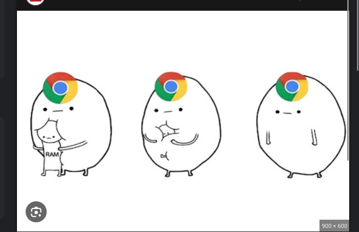
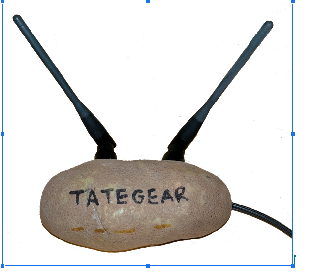

Esas son.
Mozilla Thunderbird es un cliente de correo electrónico multiplataforma, libre y de código abierto. También es una agente del Rainbow Six Siege.
JPG (también llamado JPEG) es un formato de archivo de imagen que fue desarrollado por el Joint Photographic Experts Group (JPEG) en 1992 con el objetivo de hacer los archivos fotográficos de gran tamaño más pequeños para que se pudieran compartir fácilmente.
TCP (Protocolo de Control de Transmisión): Es un protocolo de comunicación utilizado en redes de computadoras para asegurar que los datos sean entregados de manera confiable y en orden. TCP divide los datos en paquetes, los envía, y luego confirma su entrega. Si un paquete no llega correctamente, TCP lo reenvía automáticamente. Este protocolo opera en la Capa 4 (Transporte) del modelo OSI.
Google Chrome: Es un popular navegador web desarrollado por Google. Permite a los usuarios acceder a páginas web y aplicaciones en internet. Ofrece una amplia gama de características, incluyendo una interfaz de usuario intuitiva, seguridad integrada, soporte para extensiones y velocidad de carga rápida. Google Chrome funciona en la Capa 7 (Aplicación) del modelo OSI, ya que es una aplicación que interactúa directamente con el usuario.
Es un dispositivo de red que actúa como un concentrador, permitiendo la conexión de múltiples dispositivos en una red local. Cuando recibe datos en un puerto, los reenvía a todos los demás puertos, independientemente de si el destino está en línea o no, lo que puede causar congestión y colisiones en la red. Los hubs operan en la Capa 1 (Física) del modelo OSI, ya que simplemente transmiten señales eléctricas sin procesamiento ni inteligencia de red.
La longitud de onda en redes varía según el medio de transmisión. Pertenece a la capa física del modelo OSI y en la capa de acceso a la red del modelo TCP/IP.
SMTP (Simple Mail Transfer Protocol) es un protocolo estándar para enviar correo electrónico entre servidores. Se utiliza para el envío y la recepción de mensajes electrónicos. Entonces este protocolo pertenece a la capa de aplicación (OSI y TCP/IP).
Dispositivo de red que dirige el tráfico de datos entre redes informáticas. Gestiona conexiones inalámbricas y por cable. Opera en el nivel de red (nivel 3) del modelo OSI. Permite la interconexión de múltiples dispositivos dentro de una red local o entre redes diferentes.
DSL (Digital Subscriber Line): Método de conectividad que aprovecha las líneas telefónicas convencionales para proporcionar acceso a internet de alta velocidad. Utiliza tecnologías como ADSL y VDSL. Funciona en el nivel de enlace de datos (nivel 2) del modelo OSI.
MOBA (Multiplayer Online Battle Arena): Género de videojuegos en línea donde dos equipos compiten para destruir la base enemiga. Nivel de aplicación (nivel 7) en el modelo OSI.
Ping: Medida de la latencia de red, el tiempo que tarda un paquete de datos en ir de tu computadora a un servidor y volver. Nivel de red (nivel 3) en el modelo OSI.
ADC (Attack Damage Carry): Rol en juegos MOBA como League of Legends, caracterizado por infligir daño físico a larga distancia. Nivel de aplicación (nivel 7) en el modelo OSI.
Jungla: Área del mapa en juegos MOBA que se encuentra entre las líneas (lanes) donde los jugadores asumen el rol de emboscadores y recolectores de recursos neutrales. Nivel de aplicación (nivel 7) en el modelo OSI.
Top Lane: Una de las tres líneas del mapa en juegos MOBA como League of Legends, donde se colocan los campeones más resistentes. Nivel de aplicación (nivel 7) en el modelo OSI.
DDoS (Distributed Denial of Service): Ataque informático que busca inhabilitar un servidor saturándolo con un gran volumen de tráfico. Nivel de red (nivel 3) en el modelo OSI.
Lukasito, CarloJeans, Ahmad_CR7xXx360 y Manusito Santos todos los derechos reservados 2025 ©